300 Trash Pickups
Monday
While I was in the middle of erecting the babel of ints I stepped away briefly to have lunch with “The Shadow Brigade” since she was leaving town today. She gets $69 per day on food courtesy of the army so we went to Tacqueria El Buen Sabor and did our best to help me recoup what that nasty government took from me in precious shekels and between the two of us we mustered a whopping $40. I could have contributed more to the effort beyond my lengua burrito but they didn’t have the agua frescas I like.
After I finished erecting the babel of ints I treated "The Awepartment” to dinner as a celebration of his new job. We went to a Mexican restaurant called Xica; the food was great but the service was so bad I tipped 10% which I honestly thought was too much here considering we had to wait 45 minutes to order our entrees after 10+ attempts to flag down the waiter.
The meal itself was great and the vibes and conversations were even better. When we got there we had a pun off about restaurants. A knife to see you was thrown around. A shall we table this may have been slung back. I don’t remember the exact back and forth but I do remember the most important detail which is that I won. I didn’t say this at the time but I definitely ran lapkins around him.
Tuesday
Upon finishing codexing and chilling I played Spikeball with “The Spiker,” “Aquaman,” “The French Scout,” and many others. There was this one guy named Thomas who was an absolute beast of a player that crushed everyone else underfoot (or maybe under-the-ball is more apt here). I lost every game I went up against the behemoth but I was able to get a win once he got bored toying with someone like me.
Wednesday
After I finished moving my standing desk up and down for a while I went to Qua o La to support “The Writer” in a read a loud he was doing of his book! He along with some other featured writers were going to be reading out loud from their books and I’m super excited for him. He also invited “The Philosopher” to come and by sheer coincidence I brought “Let me give you a call on the world’s smallest phone” along as well and it turns out they knew each other from 5 years ago when they were back in college which was one of the better small world moments I’ve had in a while.
“The Writer” spoke with much gusto and passion about the exciting and dangerous world of Syurga. I could feel his passion and energy throughout the read aloud!
After him and the other featured writers went up the host announced that there was an open mic where anyone in the audience could sign up and as soon as he said that both “The Philosopher” and “The Writer” immediately turned to me. Of course I knew what they expected but I asked what I should present anyway and they both said “newsletter”.
I’m not opposed or anything but it felt a bit odd presenting the ramblings of my week at an event with people working on actual books. That being said, if that's what they want I see no reason to refuse :). The question now is which episode do I present? I could do the episode a few months where I crashed out which would certainly be bold. I could do something with “The Shadow Brigade” since I think she’s a very popular character with the readers. In the end I went with the 24 hour walk episode since I thought that would be a fun one to do.
As I was reading it out loud I forgot how much I wrote about other things that happened that week like “The Raja of Rhythm” and I getting dinner or me resolving to spend an evening doing nothing.
I decided to skip some of the less interesting parts and get straight to the walk which people were quite interested in. To make it more engaging I acted out the walk by walking in place for the parts of the walk where I was high energy, limping where I was low energy, and pretending to doze off for the parts where I was about to crash.
I still had to skip a few parts because I didn’t want to take too much time but people were white entertained by the whole thing and I have to admit it felt quite fun to read out loud. One of the regulars there said it was the most jarring of the entries which I thought was a fun accolade to sport.
Once we finished we sauntered around North Beach where we ran into “The Raja of Rhythm” and “The Yogi” hanging out with one of their Italian friends who I’ve met a few times over at Mission Run Club. Fun fact about this guy is that while he is mainly a SWE by trade he opened a restaurant in Paris with his brother and they have a dish there called Humza (or Hamza I don’t remember which).
As the crowd departed me and “The Philosopher” headed to Third Rail Bar for an adhoc Wednesday bar night. Upon arriving we found “The Finer Things,” “The Mosher,” “That’s nuts,” and “The Awepartment” hanging out and enjoying the vibes. I sat down and started to catch up with them only for one of the waiters to tap me on the shoulder asking if I had been to Cafe Spro earlier this morning and got the almond butter toast. I told her I had and she said she was there and she recognized me by one of my unique jackets. It was her first day over at Cafe Spro but had been working at this bar for a while which would explain why I hadn’t seen her before since at this point I know pretty much everyone who works there and they in turn all know me and my usual order.
The bar night wound up going til 1 which is late even by usual bar night standards but it was well worth it.
Thursday
Unfortunately my personal trainer got a head cold and had to cancel so I got one session less than I typically do. In lieu of that however on my way to the Codex cove I was riding the bus when a woman tapped me on the shoulder and said “Humza is that you?” I have no idea who this person is but I wanted to try and figure it out. Her look was totally unfamiliar to me. Could it have been trash pickup? Run club? Spikeball? I asked her how her week had been to see if she would describe some of the events she had done which may narrow it down somewhat but the only thing she said was that she was busy and mainly had been resting after work. On the outside I nodded and told her that made sense but on the inside I thought that that told me absolutely nothing. The one clue I have is when she mentioned she was going to do trivia at a bar in Lower Haight called Danny Coyle’s with her roommates but that got cancelled. So I’m guessing she lives around Lower Haight which makes me think Spikeball but I’m pretty low confidence.
Unfortunately we were both only on the bus for one stop together before we both got off and walked in separate directions. I hope to see her again and continue this game of figuring out who she is without her knowing I don’t know who she is. She works one block from me so I figure the odds aren’t impossible here.
Moses may have parted the clouds but today at work I flared them. Once the clouds were sufficiently flared I took “Top of the Rope” out to dinner to celebrate her new job in Edtech. This serves double duty both as I celebrate her new job and I convert more people to the church of Sofiya.
After dinner I went to second bar night with “The Philosopher,” one of his friends, “The Finer Things," “The Awepartment,” “That’s nuts,” “The Bartender,” and “The Mosher”. “The Finer things” remarked that it’s surprising that I have an iPhone and “The Philosopher” has an android expecting it to be the other way around. I’m not entirely sure why but the observation intrigued me.
Friday
On my way to the inference engine I caught the 22 bus hoping I would run into the girl from yesterday. They say you shoot for the moon and if you don’t make it you’ll land on the stars or in this case shoot for the mystery girl and if she’s not there you’ll find “The Writer” and “The Juggler”. Definitely a nice surprise to start the morning.
While I was helping run the inference engine I got a message from “La Tacqueria Royalty” about a One Piece jersey that came in the mail for him
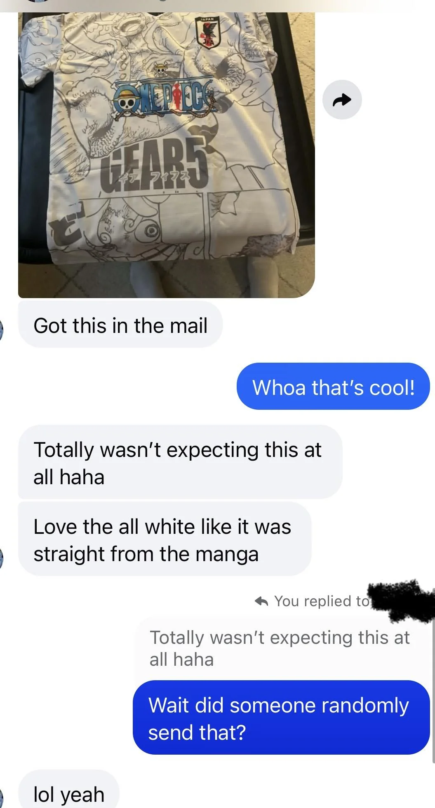
The truth is I was the one who sent it to him but I thought the bit would be funnier if I withhold the information until the newsletter comes so I’m gonna pretend I didn’t until he reads this.
I really want him to wear the jersey tomorrow to our game.
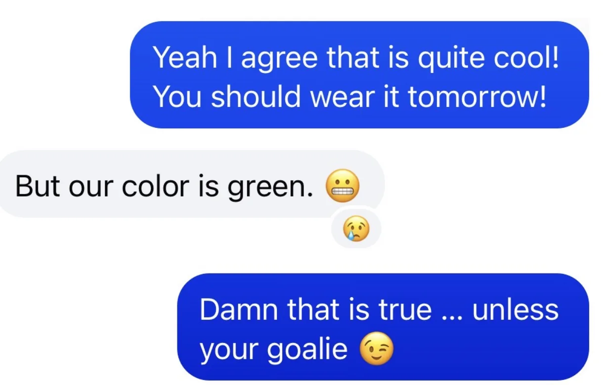
After helping run the inference engine I went to a butter chicken night hosted by a friend who I can’t come up with a good nickname for right now. I happened to get there first so I helped with cooking to the extent I could which consisted of chopping up butter and cilantro. She kept telling me I was doing a good job but at a certain point she definitely wanted me to switch to entertaining guests. As it happened some of the guests were from Canada so I got to use my time with the Canadians to show off my vast knowledge including Terry Fox (a deceased athlete who embarked on a cross Canada journey to raise money for cancer research), the fact that shawarma here isn’t as good, and one edge of Toronto suburbs.
As the event got started some familiar faces showed up like “The Big YT short,” “Breaking it down,” “function(cure_cancer)”. After a bit of simmering the butter chicken was ready and I have to say it was pretty good. I haven’t had it too much but it does make me hold British cuisine in higher regard than I did before.
An unexpected highlight of the event was my mooni stickers being quite popular. I wound up giving away a handful of them which was certainly a win. I met a number of folks there but the one who stuck out to me the most was the guy who worked at Oura on a women’s health model. Apparently he did his PhD in exercise physiology specializing in something related to the menstrual cycle which meant he was frequently accused of mansplaining things related to women’s health which I get a mild kick out of.
Saturday
The day begins as I wake up at 3:21 AM. Why you may ask? “The Awepartment” has a hike planned at 5AM so as a bit me, “The Philosopher,” and “The Juggler” show up at his place at 4 to hang out and see him off on this hike.
I got a bit of shit from “The Philosopher” for Waymoing while he and “The Juggler” ran from Mission to Montgomery for this. Regrettably I did not wake up on time for this and I didn’t have the advantage of staying up all night so I could use more foot based methods of transit.
We hung out and shot the breeze for a while and because of the aforementioned all night thing “The Juggler” took over my usual role of being the one to sleep on “The Aweparment’s” couch.
Soon “The Awepartment” left on his hike and we walked “The Philosopher" home and then I mooched a Waymo off of “The Juggler” to get to Mission where I proceeded to walk home from. It felt a bit funny since at this point I was walking home at 6AM and last night I did the same walk from butter chicken night around 11PM so it felt like a very strange case of Déjà vu.
Later I went to trash pickup with “Let me give you a call on the world’s smallest phone” and a few others. I couldn’t stay too long because it was time for the next soccer game for Team PTSD.
Today we had a guest soccer player “The Trivial pursuit” along with the usual “La Taqueria Royalty,” “The Big YT short,” and "Breaking it down”. When I got there I saw “La Tacqueria Royalty” NOT wearing the jersey which was sad :(. I guess he said he didn’t really want to be goalie
Unfortunately we did do worse than in our previous game having lost 0-7. I suspect this is because the other team was much better at passing and we didn’t have “The Enabler” and “Always up for a disc-ussion”.
I got some more useful advice though; "The Trivial Pursuit” reminded me that I need to jealously pursue the ball. I tried to do this to some degree but not quite enough. Another thing is that when the ball is coming to me I’ll have an easier time stopping it if I raise my foot slightly when I want to receive it rather than keeping it on the ground. Finally I internalized that I can’t sprint hard enough to keep up with good passing and while I do need to sprint I should keep it localized to my own area rather than sprinting all across the field in a futile effort to keep up with the ball.
Once the game ended I went to a picnic to celebrate “The French Scout’s” two year anniversary of being in America along with “The Spiker” and many others. I asked her what the most unexpected part about being in America was and she said the DMV which brought a tight lipped smile to my face.
We hung around in the Botanical garden for a while before going to Club Waziema for some Ethiopian food and clubbing. Not many people know this but in an attempt to beat the picky eater allegations I’ll say that I’m a fan of Ethiopian food and quite enjoyed making what were essentially Ethiopian tacos with the bread and beef / lamb.
After dinner we played some pool and I got some advice from “The Spiker” on making sure that when I hit the cue ball I need to make sure I’m consistent between my practice hits and the real one. As he put it, the real one should be just like the practice, just 10% stronger. Once we played a couple games and did a bit of dancing we headed out.
As we traipsed through NOPA the numbers dwindled until it was me, “The Spiker,” “The French Scout,” and another guy. We went to this guy's apartment and messed around with his split keyboard and everyone else hung out while I took a nap. At this point I was ready to crash a couple times over and I went home and knocked out.
Sunday
I’m going to break rules a little bit here and describe my day out of order because I want to save what happened first as my closing note for this newsletter.
Around 5 ish today I went to a birthday party for a friend who I don’t know super well but I met her through Midnight Runners and I do like her so I’m glad to be invited. The only other people I know beforehand are “La Taqueria Royalty” and some other acquaintances from Midnight Runners.
The two main events of this birthday party are Karaoke and Trivia. I was the first one to start karaoke and I picked WAP and it went much worse than when I did it at “The Fisherwoman’s” karaoke party. One lesson I learned from this is I think like with first impressions I have to guard myself a little bit with which songs I pick when I’m with people who I mostly don’t know. When I suggested WAP I could sense a bit of trepidation in people and the person who was running it was surprised but not in an encouraging way like the last event.
I started doing WAP and got two lines in before gauging that people were not on board with it and felt a bit uneasy and decided to stop. I had a gut feeling that people wouldn’t be happy so I decided to cut my losses which people laughed at before moving on. I’m not really sure if I made the right decision TBH. As someone who values not flinching and continuing no matter what this felt like a blow to my own self image. I kinda wish I had just continued on no matter what because singing WAP is something I enjoy. Nevertheless I’ll be doing it next Friday at the karaoke party I’m hosting so I am definitely looking forward to making it up there. The rest of karaoke goes over reasonably well. The vibe of the event was that everyone has to sing at least one song before anyone does a second so I don’t sing much more except at the end with a community round. I somewhat make up for my failures above when hotline bling comes on and everyone has stopped caring about karaoke and at one point I’m the only one belting out thethe whole thing lyrics here. It’s not much honestly but it lets me delude myself into thinking I did something.
After karaoke we go to trivia. We do this via Cahoots and I decide to pick this name as a clue to “La Taqueria Royalty”
I don’t think he quite caught on but I thought it would be a fun easter egg. Since the birthday person in question was turning 29 a lot of the questions had to do with 29 in some way shape or form like what is the 29th element on the periodic table, what golf tournament did Tiger Woods win at 29 and so on and so forth.
I left the party a bit early so I don’t know how the game ended but when I left I was in 5th place. I wanted to make sure I was in the top 5 after every round because those usernames would be displayed and I wanted to see if “La Taqueria Royalty” would figure it out. When I left I asked him if he had figured it out and he had no idea what I meant so I will go with a no there.
Alright lets turn back the clock now and go to the start of the day. I go to my 300th and final trash pickup for a while with a whole bunch of friends including “The Philosopher,” “The Raja of Rhythm,” “The Yogi,” “Let me give you a call on the world’s smallest phone,” “Not Misinformed,” “The Foxy lady,” “Trash queen,” “The Rugby player,” “The Quant,” “The Juggler,” “The Menace," and a few more folks who don’t have newsletter nicknames.
Trash pickup has been a huge part of my life for the last few years and it’s how I made the vast majority of my friends so it really means a lot that so many came out for this today. Reaching this milestone is pretty wild and I think if there is one thing I have to say regardless of how cliche it may sound is that the real trash pickup truly was the friends I made along the way. Through trash pickup I ‘ve gotten to meet so many amazing and wonderful friends and gotten to do so many cool things like go camping in Yosemite, go urchin foraging, do an all night walk through SF, and catch Daniel Lurie off guard when I asked him how he felt about changing the expression wearing the pants to wearing the Levi’s.
Of course that’s not to forget the fun I’ve had at the pickups themselves. Each time I hauled a bag that was close to ripping up, every cigarette butt I had to force out of some crack, the endless Modelo beer bottles which gave me a second hand disdain for the brand, the X-box controller patent application, the burnt bible pages, every time I would say ‘Don’t thank me; thank the courts’. I smile looking back on all of these things.
To make the occasion a bit more special I wore a suit to trash pickup
Usually before starting trash pickup we take a group photo and “The Philosopher” lifted me up on his shoulders for this one
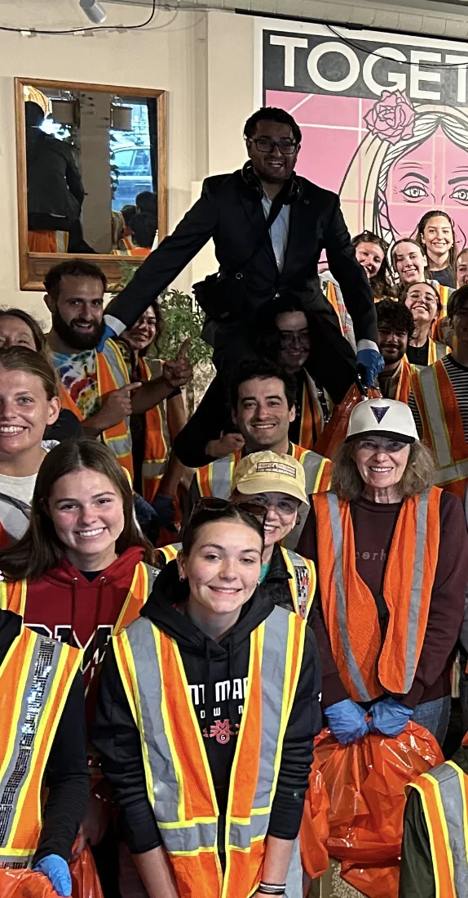
The trash pickup itself didn’t feel any different right up until I put the bag down on the curb and realized that was hit huh
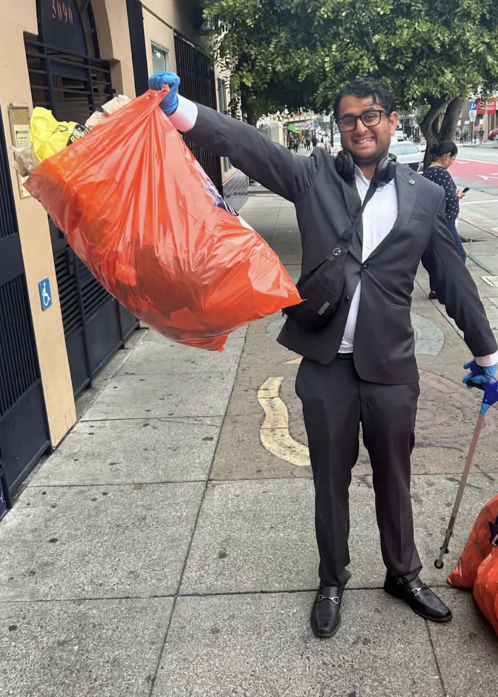
After the pickup was done we had brunch at Manny’s followed by hitting up some of the spots. We went to Ritual -> Boogaloo -> Standard Deviant.
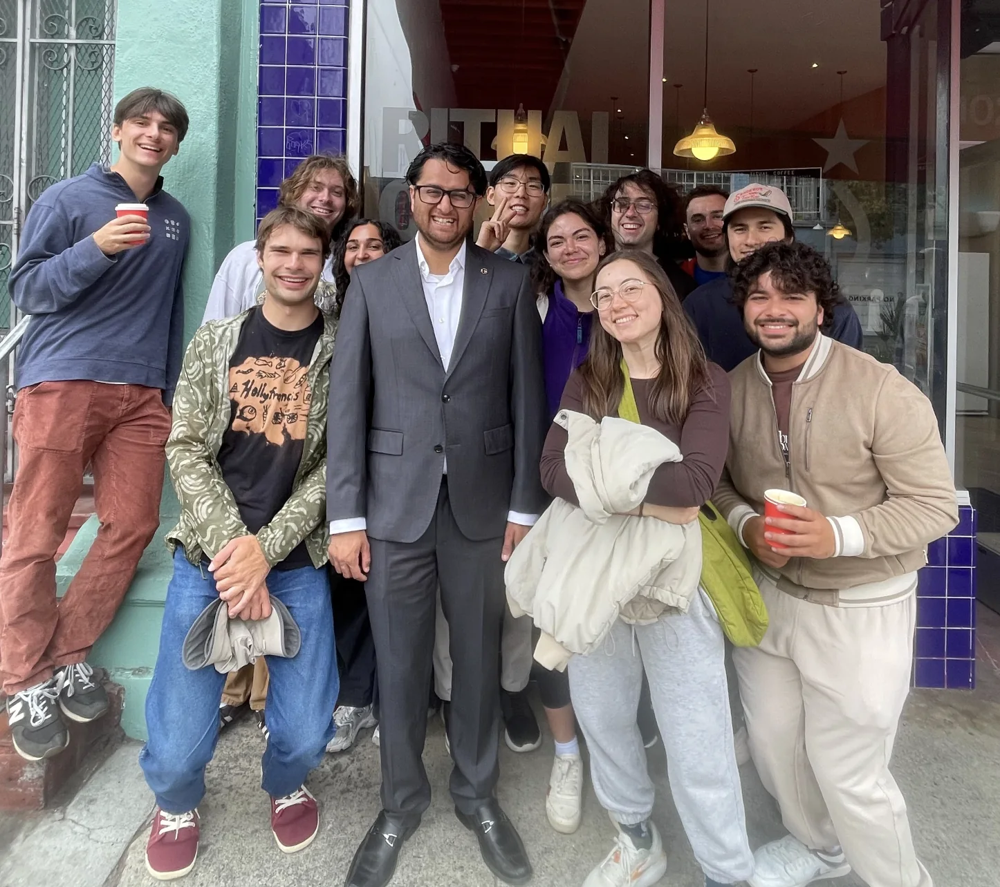
At Standard Deviant I took advantage of the trash pickup 2 for 1 beer deal to get a nonalcoholic beer which went down quite poorly. I don’t like non alcoholic beer but I figured since there was the deal I may as well do it. The beer sucked but the vibes were immaculate.
What comes next I wonder? Maybe I’ll try some other volunteering, maybe martial arts, maybe flight school. I’m not sure but I wanted to end this newsletter with the last Calvin and Hobbes comic strip that I think sums up my thoughts pretty aptly.
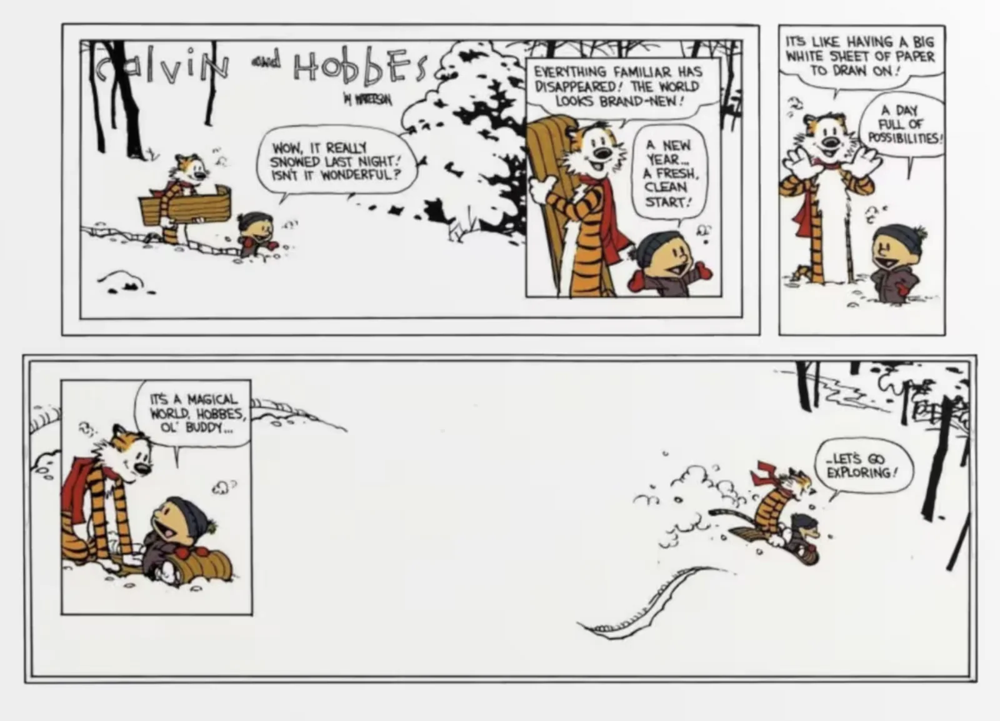
Personal training progress for the week
The dot plots below show every exercise logged through 9/15/2026; later dates are excluded. The x-axis is time, the y-axis is logged weight, and dot size represents reps or logged time. Bodyweight sets appear on the BW baseline.


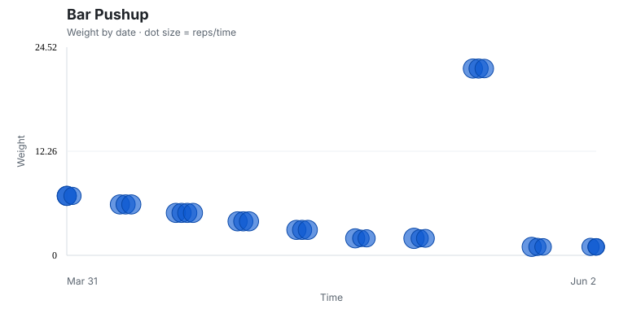

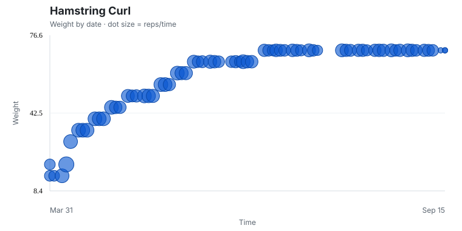


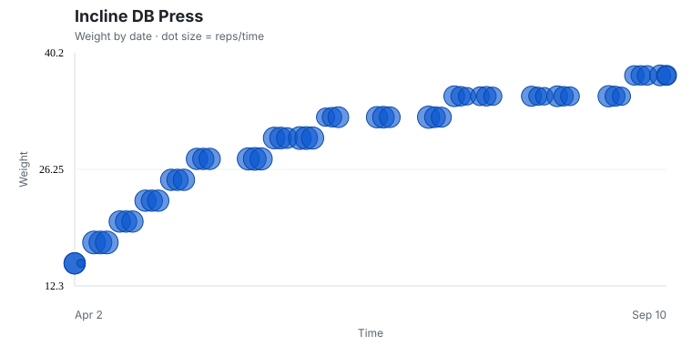
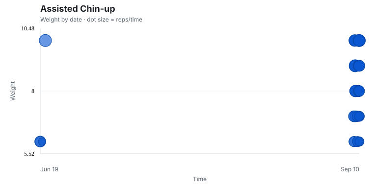

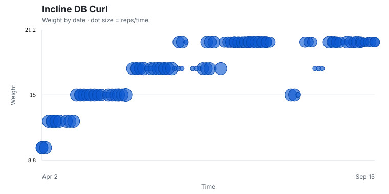

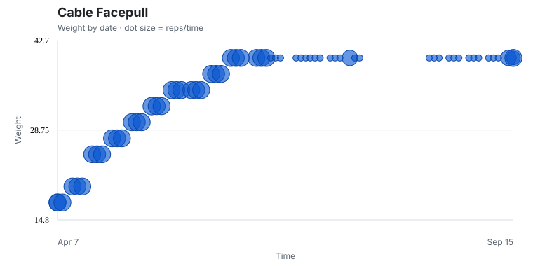

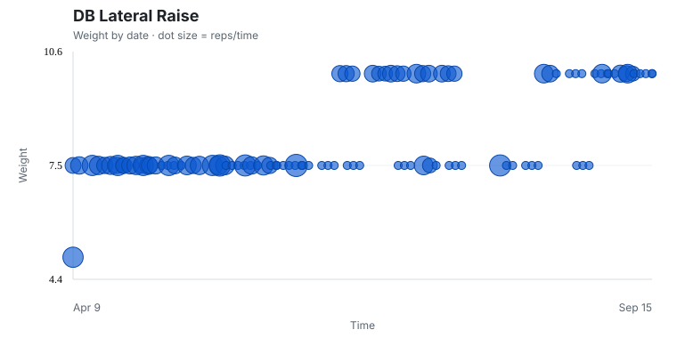


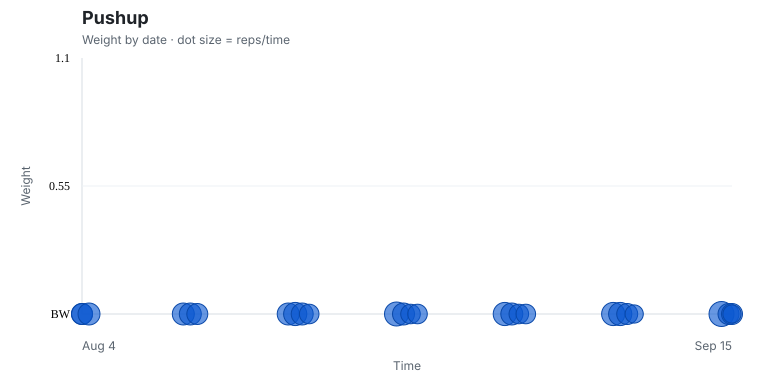

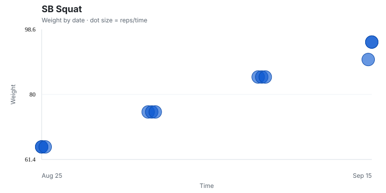
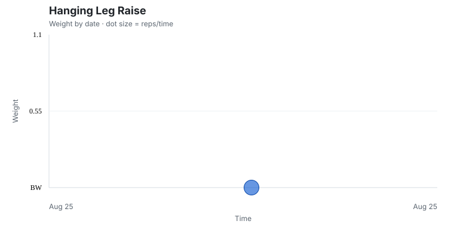
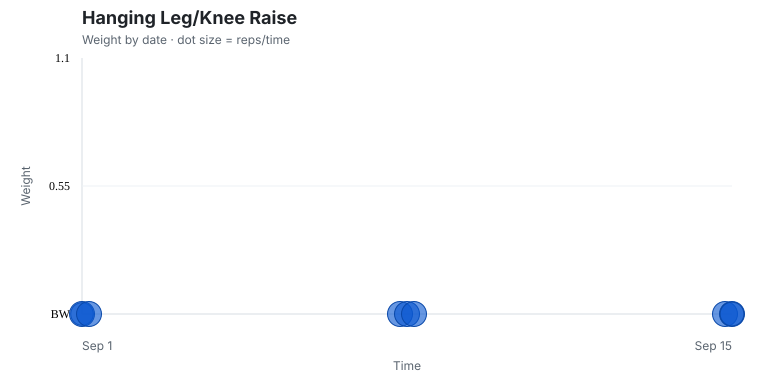
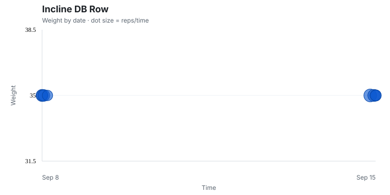